Taller Mikrotik: iniciación al RouterOS
RouterOS
Configurando el Router de Assix
Apreta la tecla → para avanzar.

Apreta la tecla → para avanzar.
Hardware Mikrotik
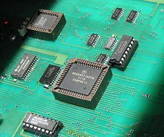
Repasemos un poco las características de los routers Mikrotik.
- Amplia gama. De lo más básico (39 euros) a routers de 1MPPS (400 euros).
- Gestión unificada. Todo su hardware se administra con el mismo software, RouterOS.
- Linux inside, pero no es libre. :(
- Muy barato en comparación a la competencia. :)
- Diferentes tipos de licencias según las necesidades. Normalmente con el hardware adquirido ya viene la licencia adecuada.
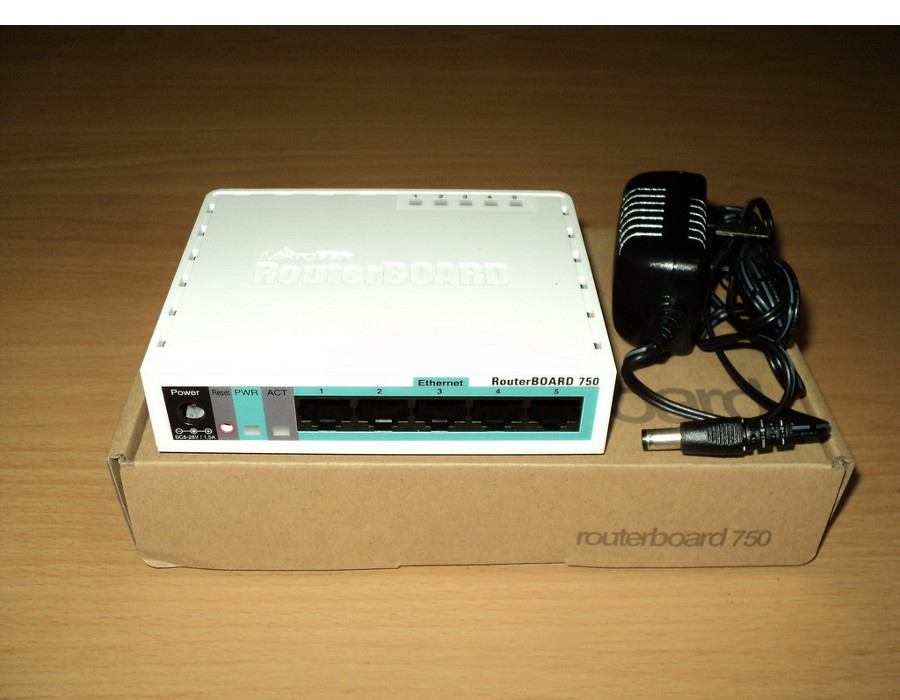
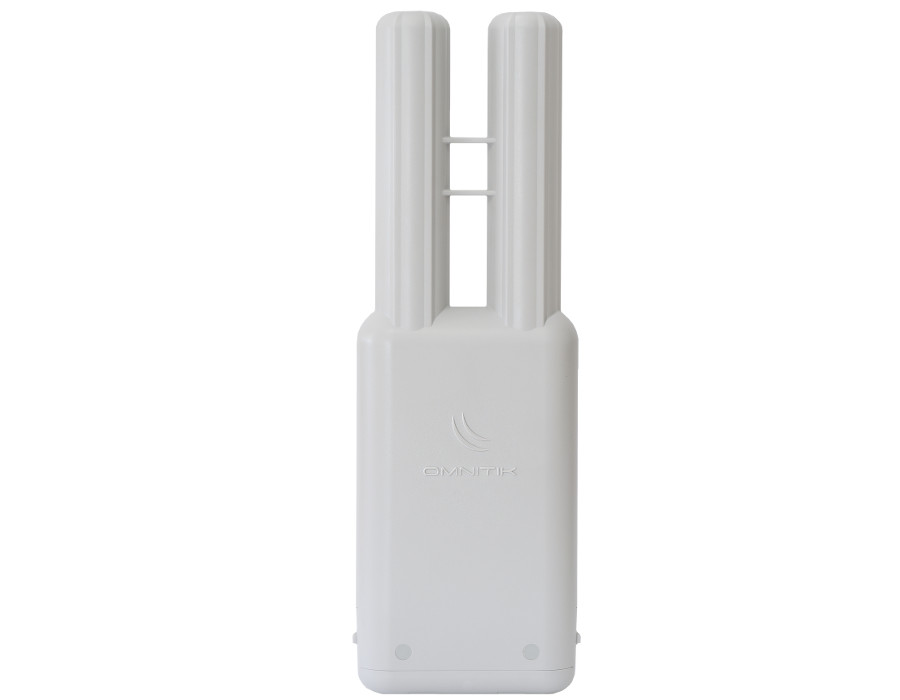
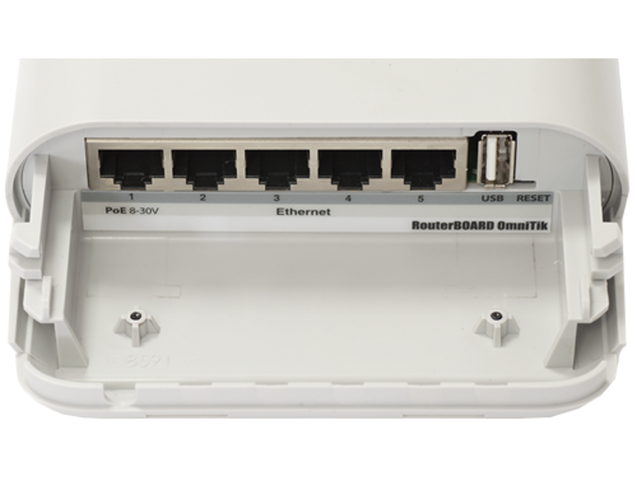
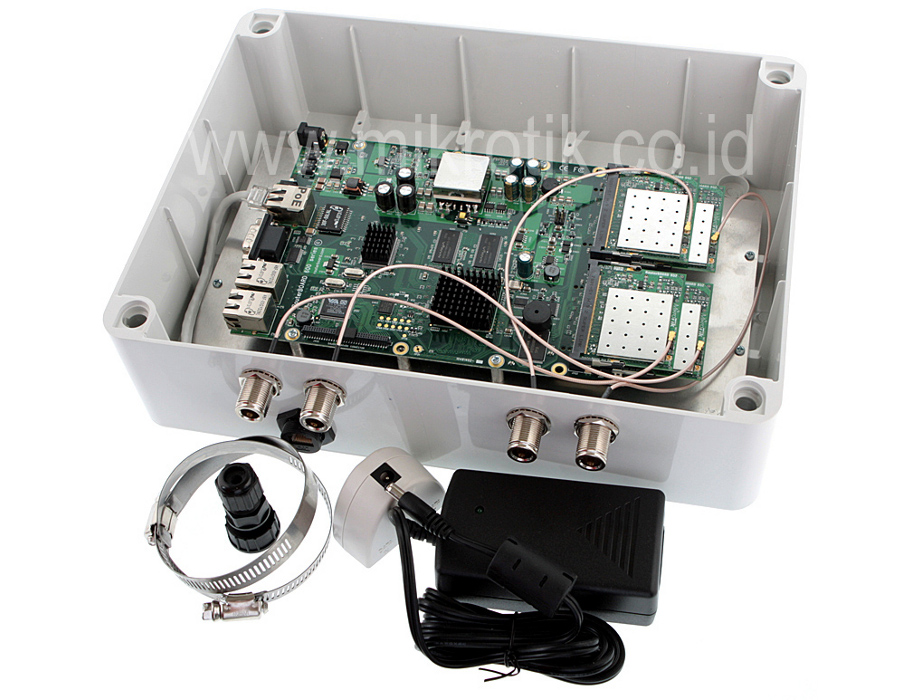
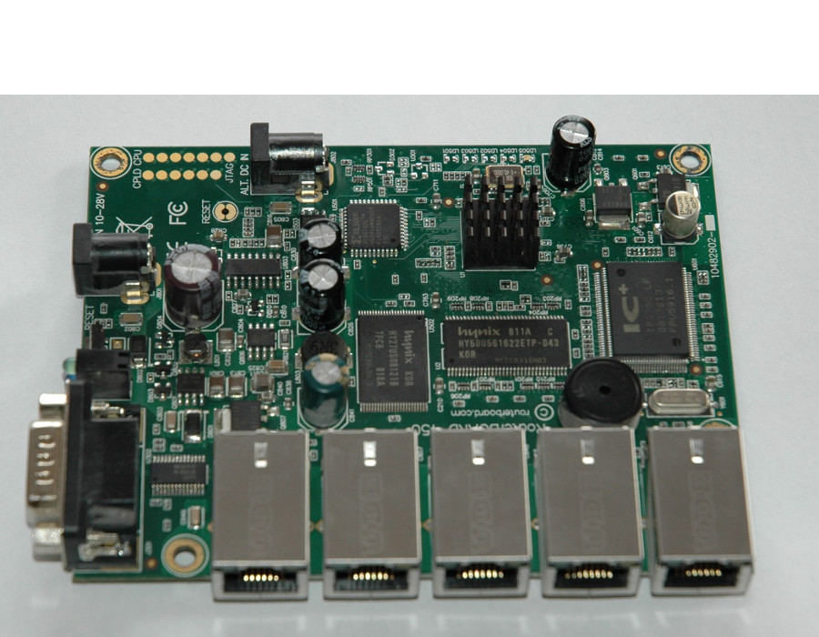
Qué pretendemos
Vamos a trabajar con la RB450 que tenemos disponible y le vamos a realizar las siguientes operaciones.
- Resetearla a valores por defecto.
- Acceder a ella vía Winbox/WebFig/SSH.
- Actualizarle el firmware.
- Segmentar las interfaces.
- Configurarle las IP's
- Configurar el servidor de túneles PPTP
Reseteo a valores por defecto
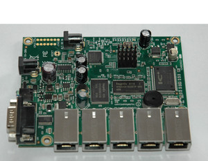
El router nos puede venir pre-configurado como es el caso. Vamos a resetearlo a valores por defecto primero que nada.
- Nos conectamos a la web del router: http://routerboard.com/RB450G.
- En la "Quick Guide" nos dices que para resetear hay que cortocircuitar el jumper de reset. Con un destornillador hacemos contacto y realizamos una secuencia de reinicio.
Conectar por primera vez
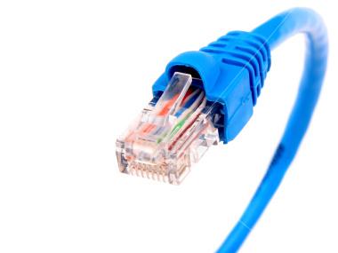
Los cacharros Mikrotik suelen alimentarse por POE en el primer puerto, y en ese mismo puerto tienen una IP en la configuración por defecto, la 192.168.88.1. Por tanto:
- Accedemos al router conectando un cable RJ-45 del ordenador al primer puerto del Mikrotik.
- Nos configuramos una IP del rango 192.168.88.0/24 para poder llegar hasta él.
- O usamos la opción mágica: Accedemos con una búsqueda por MAC gracias a Winbox.
- El usuario por defecto es "admin", sin contraseña
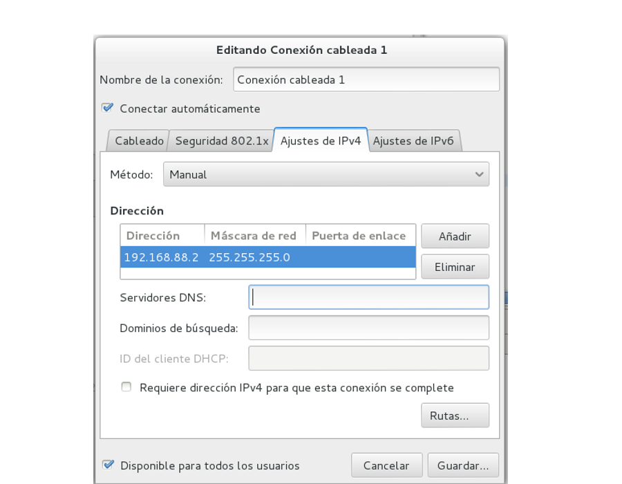
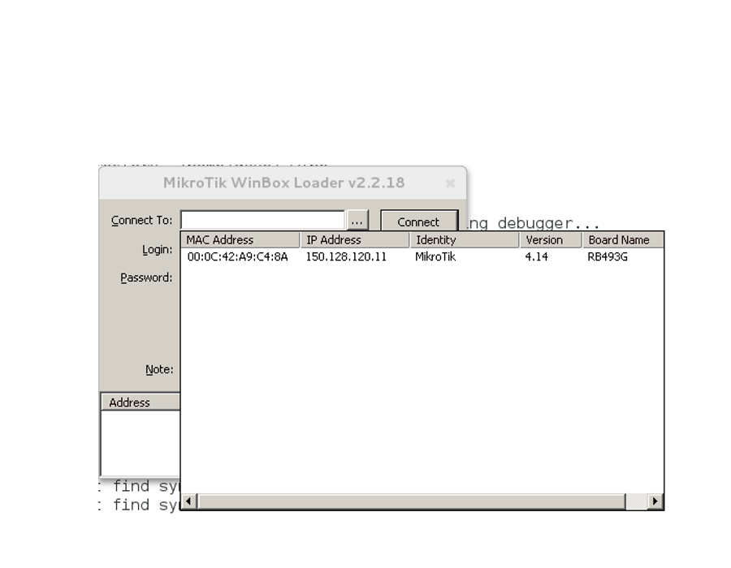
Winbox
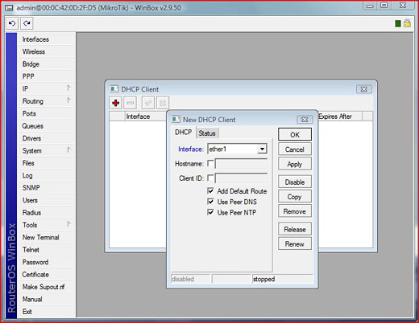
Winbox es la herramienta Win32 que nos proporciona Mikrotik para gestionar sus cacharros.
- Para Windows, pero funciona en Linux con Wine.
- Cómoda si estás habituado a herramientas de escritorio.
- La que más funcionalidad da de las tres posibles.
WebFig
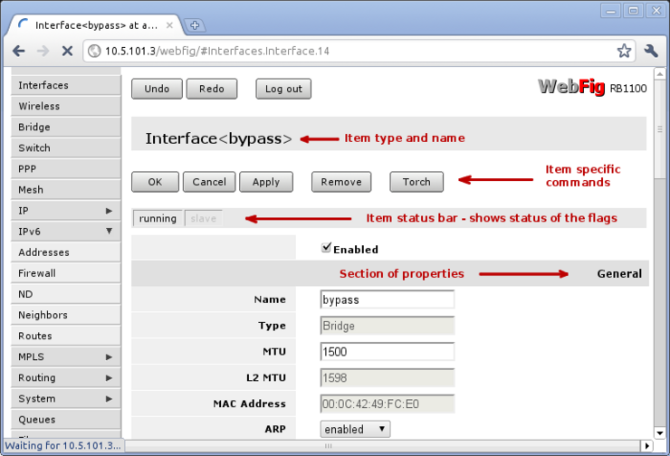
WebFig la incluyeron a partir de la versión 5.0 de RouterOS, es un entorno web similar a Winbox
- No necesitamos más que un navegador, da igual la plataforma.
- No tan cómoda y funcional como Winbox.
- Acceso web: http://192.168.88.1
Línea de comandos: SSH o Telnet
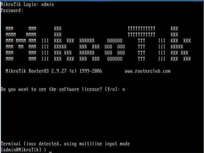
También podemos acceder a cualquier sistema mikrotik vía SSH o telnet. Es el que yo suelo utilizar más por lo cómodo y rápido.
- Secciones unificadas con las dos herramientas anteriores
- Acceso en modo consola: telnet o SSH.
Actualicemos el firmware
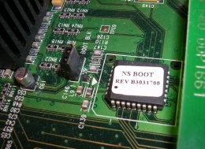
Lo primero que suelo hacer yo es bajar la última versión de firmware y actualizar. Es un proceso sencillo e inocuo con el que no podemos romper nada.
- Descargamos el último firmware de la web de Mikrotik: http://www.mikrotik.com/download
- Descargamos el paquete NPK, a no ser que necesitemos funciones adicioneles (bajaríamos el .zip)
- Subimos el archivo por FTP y lo dejamos caer al directorio raiz.
- Reiniciamos (/system reboot) y ya está.
Segmentar el switch
Este cacharro Mikrotik lleva un switch de 4 puertos, que nos va a interesar desligar, de manera que cada puerto será un interfaz en un segmento de red diferente. Para conseguirlo, accedemos a la siguiente sección:
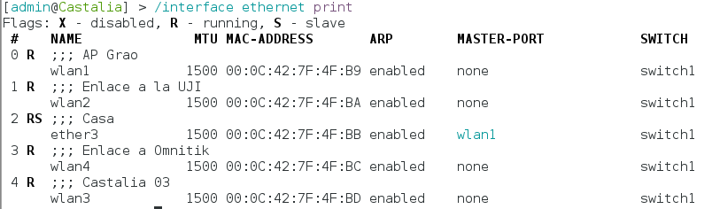
Comentamos entre todos como cambiarlo
Nombrar y comentar las interfaces
Veamos ahora cómo tenemos las interfaces y les ponemos comentarios para saber qué tenemos que conectar en cada puerto.
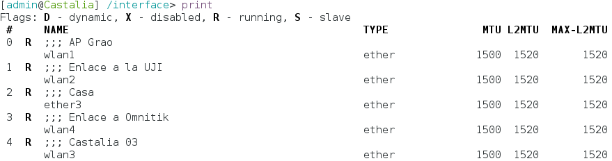
Comentamos entre todos como cambiarlo
Configurar las direcciones IP de las interfaces
Configuremos ahora las direcciones IP que queremos poner en cada segmento de Red.
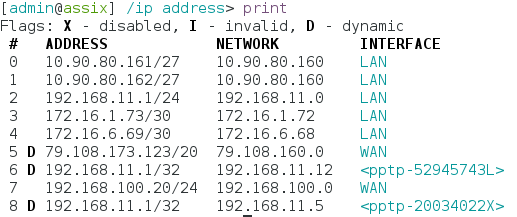
Comentamos entre todos como cambiarlo
Usuarios
Vamos a ver cómo cambiar la contraseña del usuario admin, y también crear un usuario guest con acceso anónimo en solo lectura.
Comentamos entre todos como cambiarlo